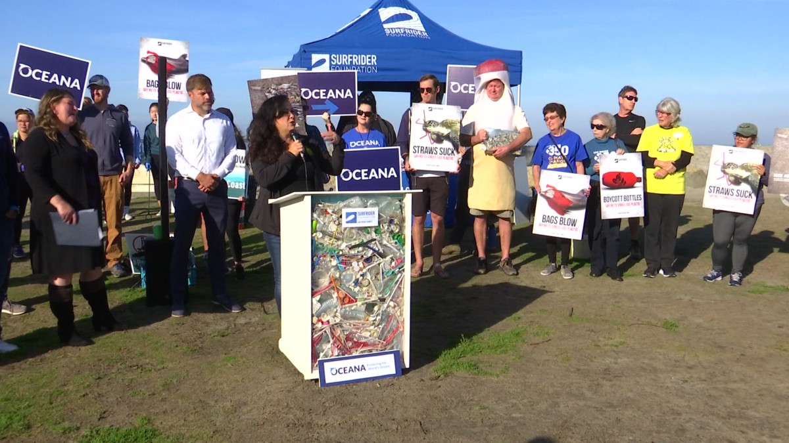

As far as how teenagers can help rid of our oceans filth, we can not grab all of the filth out of the ocean with our bare hands. One thing that all teenagers and adults can do is support Organizations Addressing Plastic Pollution. By donating to organizations like Oceana, The Surfrider Organization. According to a report done by scientists who are a part of Oceana, a wastage equivalent of a truckload enters into our oceans every minute, every day, all year long. Oceana in particular group focuses on educating the public and also advocating for policy changes for maintaining ocean wildlife. Among Ocean Conservancy’s several efforts, International Coastal Cleanup programme, the group has been hosting for over 30 years which brings millions of volunteers together to clean beaches across the world. By joining organizations, we can be a part of others peacemaking strategies.

Copyright © All rights reserved | This template is made with by Colorlib